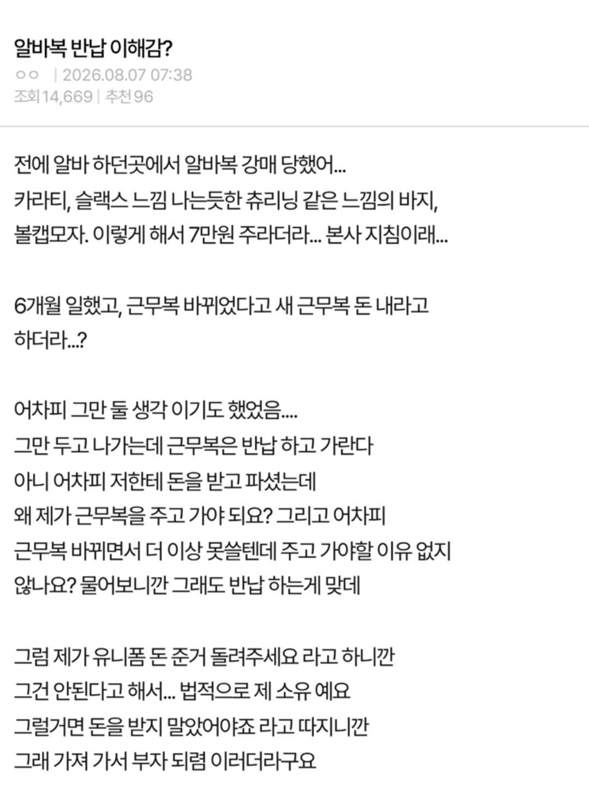

알바 그만 둘때 원래 알바복 반납해야함?
댓글
개지랄났네ㅋㅋㅋ
대여도 아니고 돈주고 산 거면 구입한 사람 소유가 맞지
무료로 주는거 유료라고 돈 삥땅쳐서 떼먹은 다음 그만 둘때 반납해야하는거라 이러지도 저러지도 못하고 염병할 소리나 하는거같은데 ㅋㅋ
이게 맞는거 같다... 윗선에 꼰지르고 그만둬야지
아니 그냥준거면 반납이맞는데 돈주고 사게 시키고선 ㅋㅋ ㅅㅂ
ㅋㅋㅋㅋ 일단 돈 다 내고 알바 그만둘때 노동청 통해 받아내면됨. 증거만 수집해놓아야지
바아아아로 본사 찌르기
유니폼을 왜 돈주고 삼??? 그것부터 에러임
옷가게는 브랜드 옷에 이름박아서 유니폼으로 쓰는경우가 많아서 돈주고 사고, 화장품매장도 그런경우 종종있더라
돈주고 샀으면 내 꺼지 미친고아새끼노 ㅋㅋㅋㅋㅋ
이거 매장 어디냐 ㅋㅋㅋ
지랄났다 ㅅㅂ ㅋㅋ
사회초년생 등쳐먹을라고 했네 ㅉ ㅉ
본사 방침인지 확인하고 조져야 함
본사에서 어물쩡 넘어가면 언론사 제보하는거고
옷가게가 저런거 있던데 말하는 싸가지가
? 아마 알바가 추가로 유니폼 구매요청 안하는 이상부터가 문제 아닌가?
사장이 ㄹㅇ 문제인데?
공론화 해야지 댕스렉터새기들 사회초년생들 상대로 뭐하는거야
일하던 알바가 그만두면 업장의 치부를 제일 잘 아는 무서운 고객이 되는건데 그것도 생각못하는 멍청한 사람이 사장을 하고있네 ㅋㅋ
보통 브랜드 매장은 유니폼 명목 직원가로 사입어야하더라.
하루 하고 도망가는 애들 있어서 돈 받는건 이해가 감.
그러면 한 두달 후에 임금에 유니폼 값을 환불해줘서 보증금 느낌으로 하던가 뭔 ㅈ같은 사고방식인지 모르겠음.
이런 일은 꼭 주작같으면 진짜더라
저런일 한두개가 아닐듯
알바옷을 돈주고 사는곳이있네 돈내고사라는 말듣자마자 도망갔어야지 ㅋㅋㅋㅋ
사장씨발임?
저번에 워크맨인가 어디서도 유니폼 사비로 구매해야 한다는 거 나와서 논란되지 않았나
공짜로 대여해서 근무복 준거를 회수한것도 아니고
돈 다 받아먹고 회수하는건 신박하네 ㅋㅋㅋ
ㅅㅂ 일단 보니까 머리 안 굴러가서 지는 부자 못 되겄음
존나 뇌정지오네 ㅋㅋㅋ
제목 보고 당연하지 생각했는데 내용보니 어지럽네
진짜 대가리 샷건으로 터뜨려버리고싶네 씨팔
난 알바하면서 유니폼을 돈주고 사본적이 없네
근로감독관 말로는 영수증항목에 '근무복 대여'명목으로 적혀져있으면 5만원만 돌려주는 걸로 처리되는데, 내 영수증항목에는 '근무복'이라고 되있어서 그게 내소유로 되어버려서 절도죄가 성립된다고 했음ㅋㅋㅋ
안주고 버티다가 전화와서 하는 소리가 합의금을 내릴 생각있냐고 묻길래 난 없다니깐 그때는 또 퇴직금이랑 같이 주겠다 이지랄시전했음ㅋㅋㅋ
1년 일해서 생긴 퇴직금이랑 이거랑 왜 같이 주냐고 하니깐 그건 본인들이 알아서 할 문제라고 염병떨어대서 그것도 근로감독관한테 일러바침.
퇴직금 170만원, 합의금 70만원 받고 치움ㅋㅋㅋㅋ
근데 홈플러스가 우리동네라서 장보러 자주 갔음ㅋㅋㅋㅋ양념육 사면서 점장님 감사히 잘 먹겠습니다.하고 인사함ㅋㅋㅋ똥씹은 표정이 가관이었는데ㅋㅋㅋㅋ